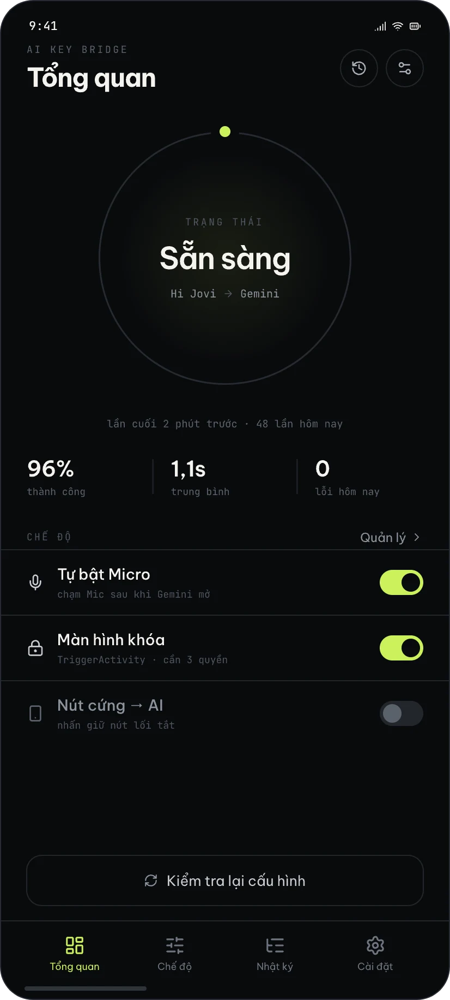
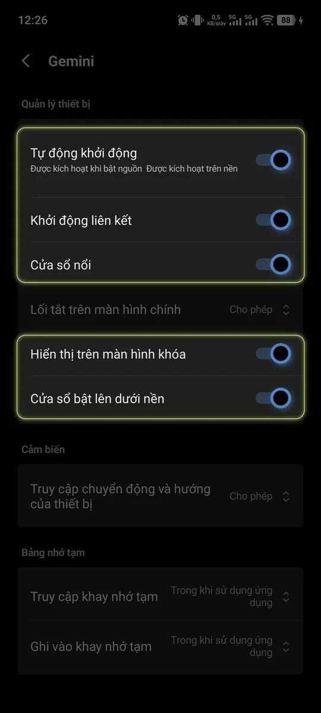
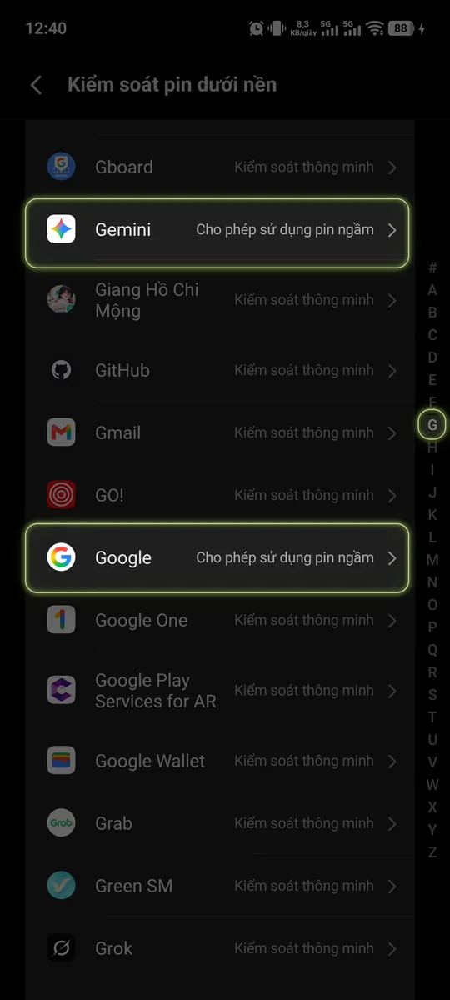
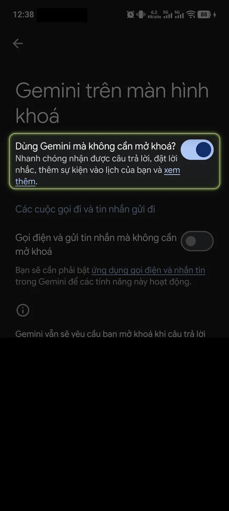

Android 11+ · OriginOS · Không root
Hô “Hi Jovi”.
Gemini trả lời.
Biến khẩu lệnh và nút AI của ROM nội địa thành cửa mở Gemini: bắt trợ lý gốc vừa mở, đóng nó, hiện lớp phủ Gemini với Micro bật sẵn và khoanh tròn để hỏi được. Script nền chạy độc lập — tắt Gỡ lỗi USB để dùng app ngân hàng vẫn chạy.
- Không root
- Không ghi âm
- Dùng cùng app ngân hàng

Trước & sau
Một cái nút. Không còn chuỗi lệnh.
Cách cũ cần PC, cáp và lòng kiên nhẫn. AI Key Bridge gói toàn bộ quy trình đó vào vài màn hình onboarding — rồi biến mất khỏi đường đi của bạn.
- Bật gỡ lỗi USB, cài platform-tools trên PC
- Cắm cáp, chấp nhận hộp thoại RSA
- Dán 7 lệnh settings / appops / locale
- Tự đo tọa độ nút Micro của Gemini
- Rút cáp là script chết
- Reboot xong phải chạy lại từ đầu
- ROM cập nhật: lệnh sai, tự mò lại
- Chọn cách dùng: Script nền (Bank-Safe) tích hợp sẵn Engine nội bộ
- Ghép nối 6 số Gỡ lỗi không dây ngay trên thanh thông báo — không cần cài Shizuku, không cần PC
- Hô “Hi Jovi” → lớp phủ Gemini, Micro bật, khoanh tròn được
- Bấm 1 chạm tự tắt Tuỳ chọn nhà phát triển & Gỡ lỗi USB để dùng app ngân hàng / VNeID — script vẫn chạy
- Reboot: bật lại Gỡ lỗi không dây là Engine tự kết nối lại không cần nhập mã lần 2
- Đổi đích đến: Gemini, ChatGPT Voice, Claude hoặc app khác
Không root · Không Xposed · Không gửi dữ liệu ra ngoài
Luồng chạy thật
Từ tiếng gọi đến Micro:
chưa tới 2 giây.
Không dùng Trợ năng, không ghi âm. Script shell chỉ lọc tên sự kiện trong event log, bấm Back rồi gọi lớp phủ Gemini — giống hệt tự giữ nút nguồn.
-
01 / ≈ 50 ms
Bắt trợ lý gốc
Script thấy CopilotPanelWindow trong event log.
-
02 / ≈ 500 ms
Đóng panel, nhả audio
Gửi Back, chờ Tiểu V nhả audio focus.
-
03 / ≈ 400 ms
Mở lớp phủ Gemini
Keyevent 219 (phím trợ lý, như giữ nút nguồn): lớp phủ có ảnh màn hình nên khoanh tròn được.
-
04 / ≈ 600 ms
Micro bật sẵn
Chờ lớp phủ đứng yên rồi chạm Micro theo tỉ lệ màn hình. Google kẹt thì tự khởi động lại và gọi lần nữa.
# 1 · đặt trợ lý mặc định
$ settings put secure assistant \
com.google.android.googlequicksearchbox/.voiceinteraction.GsaVoiceInteractionService
✓ đọc lại: Gemini
# 2 · vá crash locale Tiểu V
$ cmd locale set-app-locales com.vivo.ai.copilot --locales en-US
✓ en-US
# 3 · cho Gemini xem màn hình (khoanh tròn)
$ settings put secure assist_screenshot_enabled 1
✓ onCấu hình tự động qua Engine nội bộ, hoặc dán tay bằng ADB.
Provisioner chạy trực tiếp qua Engine nội bộ (ghép nối 6 số Gỡ lỗi không dây, không cần Shizuku) hoặc in lệnh ADB cho bạn dán. Mỗi bước đều đọc lại giá trị để xác nhận — không tin exit code; bước nào đã đúng thì bỏ qua, không làm Google và Tiểu V khởi động lại. Lệnh nào fail thì báo đúng lệnh đó, kèm gợi ý theo ROM.
Kích hoạt xong app tự động tắt Tuỳ chọn nhà phát triển và Gỡ lỗi USB — cả Engine nội bộ lẫn script nền vẫn chạy trong RAM. Khởi động lại máy thì mở lại Gỡ lỗi không dây để Engine tự kết nối và bật lại script.
Onboarding · chụp trên vivo X300 Pro
Vài màn hình, rồi không cần mở app nữa.
Cài đặt xong là xong. Chỉ cần mở lại app để bật script sau mỗi lần khởi động máy.

Mở thẳng trang quyền
Chạm 1 lần để nhảy thẳng vào trang Tự khởi động, Cửa sổ nổi & Màn hình khóa của Google và Gemini — kèm ảnh khoanh vùng rõ ràng.

Pin ngầm & Trợ lý mặc định
Mở thẳng danh sách Kiểm soát pin dưới nền và trang Trợ lý kỹ thuật số bị Vivo giấu khỏi Cài đặt thường.

Hướng dẫn từng bước bằng ảnh
9 bước hướng dẫn bằng ảnh chụp màn hình thật ngay trong app (cả Gemini trên màn khóa, khẩu lệnh “Hi Jovi” và tắt Gỡ lỗi).
Tính năng
Mọi thứ một script ADB
không làm được.
Không chỉ là chuyển hướng. Là giữ cho nó hoạt động sau mỗi bản cập nhật ROM.
-
Không cần PC & Shizuku
Engine nội bộ tự ghép nối 6 số Gỡ lỗi không dây và khởi chạy script ngay trên máy. Tắt Gỡ lỗi, vuốt tắt app — chuyển hướng vẫn hoạt động.
-
Dùng cùng app ngân hàng & VNeID
Không Trợ năng, không mở cổng TCP ngầm. Chạm 1 lần tự tắt hẳn Tuỳ chọn nhà phát triển và Gỡ lỗi USB để mọi app ngân hàng và VNeID hoạt động bình thường.
-
Vá crash tiếng Việt
Đặt locale en-US cho Tiểu V bằng một chạm — hết crash khi máy đang chạy tiếng Việt.
-
Micro bật, khoanh tròn được
Lớp phủ Gemini mở bằng phím trợ lý nên khoanh tròn để hỏi được; script chạm Micro khi lớp phủ đã hiện hẳn, theo tỉ lệ màn hình chứ không hard-code độ phân giải.
-
Nút cứng → AI
Bấm nút AI hay nút lối tắt là mở lớp phủ Gemini. Script đọc event log của nút nên Tiểu V không kịp hiện lên.
-
Đa hãng bằng JSON
Vivo đã kiểm chứng; Xiaomi, OPPO, Honor và Nubia có profile beta. Hãng khác dùng “Dò trợ lý” để tự lưu cửa sổ.
Mã nguồn mở
Không bản Pro. Không quảng cáo.
Chỉ có code.
Toàn bộ app, Provisioner và profile JSON nằm trên GitHub. Không tài khoản, không license, không server của chúng tôi.
Fork, sửa, dùng trong dịch vụ cài đặt máy — miễn giữ phần ghi công. Không paywall, không telemetry, không SDK trả phí.
-
01
Fork & build
Clone, mở Android Studio, chạy assembleRelease. Không cần key hay server.
-
02
Gửi profile ROM
Một file JSON cho hãng máy của bạn. Test trên máy thật là merge.
-
03
Gửi log chẩn đoán
Một file .zip gồm log app, lý do app bị tắt và (qua Shizuku) log toàn máy — đủ để tái hiện lỗi.
Hỗ trợ theo hãng
Bắt đầu với Vivo,
mở rộng bằng profile.
Mỗi hãng là một file JSON đi kèm app. Vivo đã kiểm chứng trên máy thật; các hãng khác có profile beta và cần người dùng thật xác nhận.
| Hãng / ROM | Trợ lý gốc | Gói | Trạng thái | Ghi chú |
|---|---|---|---|---|
| Vivo / iQOOOriginOS | Tiểu V / Jovi | com.vivo.ai.copilot | Đã kiểm chứng | CopilotPanelWindow · script nền · locale fix |
| Xiaomi / RedmiHyperOS China | XiaoAI | com.miui.voiceassist | Beta | VoiceAssistActivity · autostart gắt |
| OPPO / OnePlus / RealmeColorOS China | Breeno | com.heytap.speechassist | Beta | SpeechAssistActivity · Action button |
| Honor / HuaweiMagicOS | YOYO | com.hihonor.magicvoice | Beta | VoiceAssistantActivity · lớp phủ |
| Nubia / RedMagicMyOS | Mora | cn.nubia.voiceassist | Beta | VoiceAssistService · phím cạnh máy |
Profile beta lấy tên gói và tên cửa sổ từ thông tin công khai, chưa thử trên máy thật. App không phản ứng thì dùng “Dò trợ lý” để lưu đúng cửa sổ của máy bạn, và gửi profile lên GitHub.
Riêng tư & câu hỏi
Nó nhìn thấy cửa sổ, không nhìn thấy bạn.
App không dùng Trợ năng. Đây là chính xác những gì script đọc, và những gì nó không bao giờ chạm vào.
-
Không đọc nội dung màn hình
Script chỉ lọc tên sự kiện trong event log và xem tên cửa sổ đang mở để biết lớp phủ Gemini đã hiện — không đọc văn bản, không chụp màn hình.
-
Không ghi âm, không lưu giọng
Micro là của Gemini. App không có quyền thu âm thanh nào.
-
Log chỉ xuất khi bạn bấm
File .zip nằm trên máy cho tới khi bạn tự chia sẻ. Log toàn máy (qua Shizuku) có thể chứa tên app khác hay tên Wi-Fi — chỉ gửi riêng cho người phát triển.
Không. App không dùng root, không Xposed, không cài system app. Shizuku (không root) cho app quyền shell để chạy script nền và lệnh cấu hình. Không muốn dùng Shizuku thì dán lệnh ADB từ máy tính một lần.
Được. Từ bản 1.0.10 app không còn dùng Trợ năng. Kích hoạt xong, bạn tắt công tắc tổng Tuỳ chọn nhà phát triển và Gỡ lỗi USB — hai cài đặt mà app ngân hàng chặn. Script nền chạy bằng quyền shell, tách khỏi app và Shizuku, nên vẫn chuyển “Hi Jovi” sang Gemini.
Không phụ thuộc PC: rút cáp vẫn chạy. Script nền chạy tách khỏi app nên vuốt app khỏi đa nhiệm, dọn đa nhiệm, dừng Shizuku hay tắt Gỡ lỗi USB vẫn dùng được; chỉ mất khi khởi động lại máy — bật lại Shizuku, mở app, bấm Kích hoạt.
Không. App can thiệp vào trợ lý hệ thống qua quyền shell (Shizuku) nên không phù hợp chính sách Play. APK phát hành trực tiếp trên GitHub Releases, ký bằng một khoá cố định, kèm file SHA-256.
Profile là file JSON đi kèm APK. Khi tên cửa sổ hoặc tên gói đổi, dùng “Dò trợ lý” để lưu cửa sổ mới ngay trên máy, rồi chờ bản APK cập nhật profile. App không có quyền Internet nên không tự tải profile từ xa.
Bắt đầu trong 3 phút
Máy của bạn đã có Gemini.
Chỉ thiếu một cái nút.
Tải APK, chọn cách dùng, chạm một lần. Sau đó hô “Hi Jovi” và nghe Gemini trả lời.